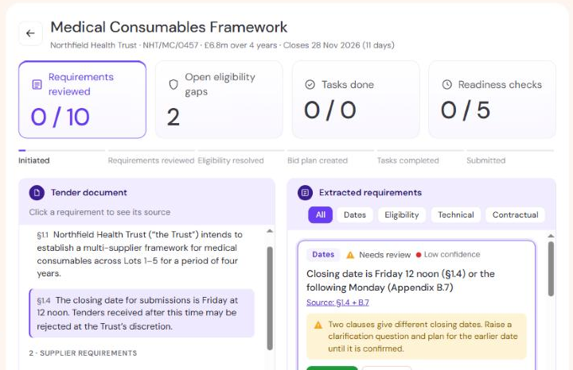
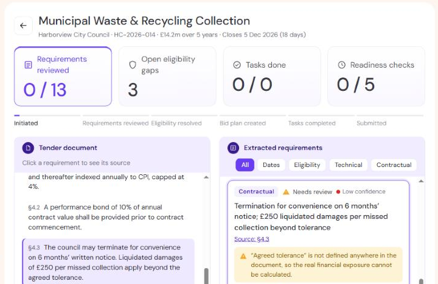
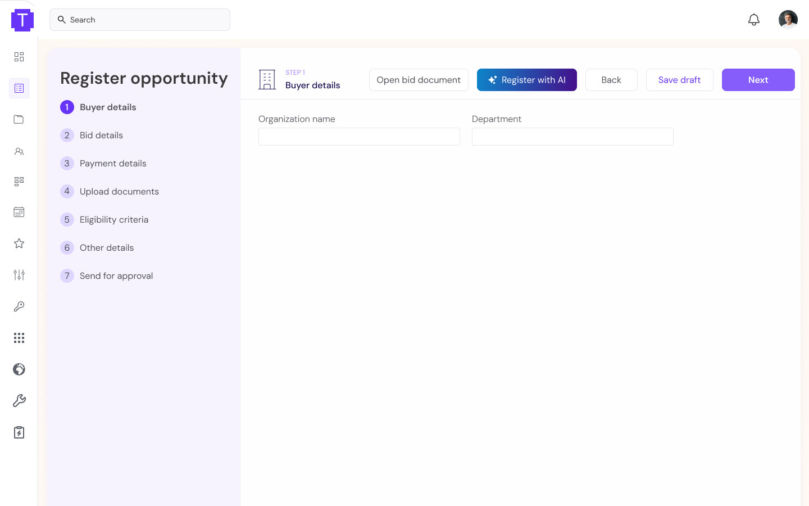
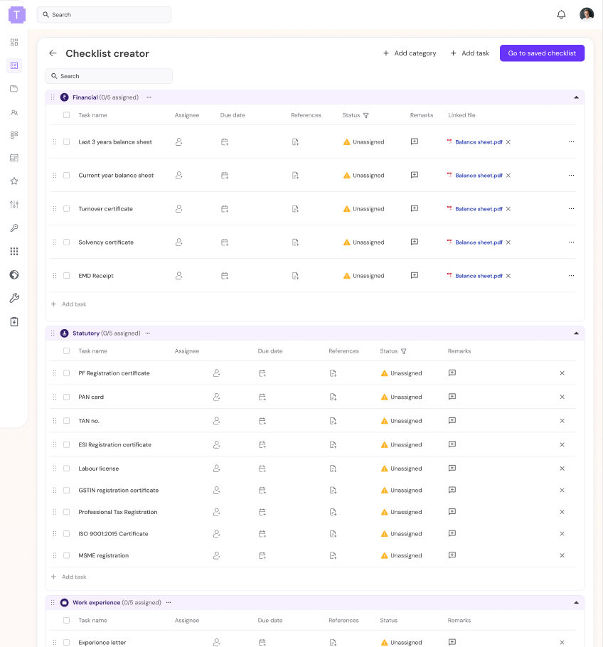

0→1 Product DesignFounding DesignerAI-Native DesignDesigning for AI LimitationsHuman + AI CollaborationEnterprise UXDesigning for Trust & Verification
Timeline
7 months
Role
Founding Designer
Scope
Product thinking, workflow design, information architecture, interaction design and UI
Product
AI-powered tender analysis and bid-management software
Project snapshot
Problem
Tender teams spent hours reading lengthy tender documents, cross-checking eligibility, gathering documents, and manually turning requirements into bid tasks. The process was fragmented, making it easy to miss requirements and slowing down decisions.
Solution
A unified bid workflow that uses AI to extract and organize tender requirements, surface eligibility gaps, and turn requirements into actionable tasks and document checklists, while keeping users in control of verification and decisions.
Impact
The product moved from zero to its first customers, and the team observed a substantial reduction in the time from receiving a tender to preparing a proposal. A repeatable workflow now connects tender analysis to bid preparation.
Context
First, what is a tender?
A tender, often called an RFP (Request for Proposal), is a buyer's public call for companies to compete for a contract.
Governments and large enterprises use them to buy roads, software, equipment and services. Every RFP spells out four things:
01
What is needed
Scope, specifications, timeline
02
Who can apply
Turnover, experience, certificates
03
What to submit
Forms, documents, proof
04
How it is judged
Criteria and a hard deadline
Read the RFP
Check if you qualify
Submit a proposal
Miss one requirement or the deadline, and the bid can be rejected.
The company I worked with helps businesses discover these opportunities and manage the work required to bid for them.
The bid process
So what does a tender team actually do?
Find an opportunity
Spot a relevant RFP among the many published, and decide if it is worth a closer look.
Understand requirements
Read the full document and pull out what the buyer is really asking for, clause by clause.
Check eligibility
Confirm the company meets the conditions, such as turnover, experience and certificates, before investing more time.
Prepare the bid
Turn each requirement into a task with an owner: find the certificate, confirm the details, get the signature.
Submit
Assemble the final documents and send the proposal before the deadline.
Wait for the result
The buyer evaluates every proposal and announces who wins the contract.
My role as a designer was to create efficient workflows that make this whole journey easier for the bid manager.
Discovery
Understanding the bid manager's workflow
For each of the six jobs, I defined the areas worth investigating, as many as it took to get clarity, and spoke to bid teams about them.
Find an opportunity
Area 1
Where do teams discover relevant tenders today?
“We check eight different government portals every morning. Some days I find the right tender, some days I hear about it from a competitor.”
Find an opportunity
Area 2
How do teams judge whether a tender is worth pursuing?
“Most tenders are not for us. I need to know in two minutes whether it is worth opening the full document.”
Find an opportunity
Area 3
How early do teams find out, and what does finding out late cost?
“By the time someone forwards it to me, half of the time we had is already gone.”
Understand requirements
Area 1
How do teams find every requirement across a long document?
“The condition on page 20 is only explained in an annexure on page 146. You have to hold both in your head.”
Understand requirements
Area 2
How do teams know what a clause really means?
“A clause can look routine until you read the definition that sits three sections later.”
Understand requirements
Area 3
How do teams know the analysis is complete and still current?
“Then a corrigendum arrives, and I have to work out what changed and what else it touches.”
Understand requirements
Area 4
How do teams read tables, footnotes and eligibility formulas?
“The formula is in a footnote under a table, and the footnote changes the number.”
Understand requirements
Area 5
How do teams spot contradictions between sections?
“Section 4 says 90 days, the annexure says 120. Nobody tells you, you have to notice it yourself.”
Check eligibility
Area 1
How do teams test the company against each criterion?
“Turnover, similar projects, certificates. I tick them off one by one in a spreadsheet.”
Check eligibility
Area 2
How do teams tell mandatory conditions from preferences?
“Some conditions disqualify you, others only cost you marks. They are written in the same way.”
Check eligibility
Area 3
How do teams deal with gaps they could still close?
“If we are short on experience, can we partner or use a subcontractor? That is the real decision, and we make it late.”
Check eligibility
Area 4
What evidence proves each criterion, and will the buyer accept it?
“We have the experience, but does this certificate say what the tender wants it to say?”
Prepare the bid
Area 1
How is the work broken into tasks and owners?
“I turn the tender into a list on my own, and then chase people on WhatsApp.”
Prepare the bid
Area 2
How do teams find documents they already have?
“The certificate exists somewhere. Finding the current version takes longer than writing the response.”
Prepare the bid
Area 3
How do teams track progress against the deadline?
“Everyone works on a different piece, and I do not know what is actually done until the last day.”
Prepare the bid
Area 4
How do drafts and reviews move between people?
“Drafts go around by email, and I end up merging three versions of the same file.”
Submit
Area 1
How do teams check that the package is complete?
“Our last check is a person reading the requirements against the files. Every time, we are afraid we missed one.”
Submit
Area 2
Which portal rules cause problems at the last minute?
“File size limits, signed PDFs, naming rules. It is always in the last hour.”
Submit
Area 3
Who approves the bid, and how long does sign-off take?
“The signatory is travelling, and we are waiting for an approval an hour before the deadline.”
Wait for the result
Area 1
How do teams follow the status after submitting?
“After we submit, it is silence. We keep refreshing the portal for an update.”
Wait for the result
Area 2
What do teams do with a win or a loss?
“When we lose, I want to know why so the next bid is better. Usually I get nothing.”
Wait for the result
Area 3
What carries over to the next tender?
“Every bid starts from scratch, even though most of the documents are the same.”
The challenge
Turning a tender into an actionable plan
Preparing a tender response involved much more than reading a document and writing a proposal.
Bid managers had to review lengthy tender documents, identify eligibility criteria, evaluate compliance against their company's capabilities, track deadlines, and identify every document required for submission.
For each required document, they also needed to determine whether it already existed, where to source it, which team or person owned it, and whether it needed to be newly prepared, reviewed, signed or stamped. Much of this work involved manually reading, copying, organising and cross-checking information across documents and teams.
The design opportunity
The engineering team was building an AI agent to analyse tender documents. My challenge was to translate that analysis into an experience that helped bid managers make decisions and move work forward. Two questions guided the design:
How might we make AI-extracted tender information understandable, verifiable and actionable?
How might we help bid managers coordinate the work required to prepare a complete tender response?
The opportunity was not simply to automate document reading. It was to connect tender analysis to the entire preparation workflow.
Jobs to be done
Analysing a tender document
To ideate solutions, we first mapped all the jobs a bid manager has to get done when analysing a tender. Mapping every job, not just the obvious ones, gave us a complete picture of the work, so each solution we explored could be traced back to a specific job.
Core jobWhen a tender appears worth pursuing,I need to understand its requirements, evaluate them against my company's capabilities, and determine the work involved,so I can make an informed decision and know what it will take to prepare a compliant bid.
01
Understand the tender and its scope
GoalBuild an accurate picture of what the buyer is asking for.
10 activities
Identify the type of tender and the organization issuing it.
Understand the purpose and scope of the project.
Identify the products, services, or work being requested.
Understand the expected deliverables and technical specifications.
Identify the locations, quantities, and project duration, where applicable.
Understand contractual conditions and special requirements.
Identify the structure of the document and locate relevant sections.
Navigate between the main tender document, annexures, schedules, and referenced documents.
Identify amendments or corrigenda that may change the original requirements.
Clarify unfamiliar terminology or ambiguous instructions.
Desired outcomeUnderstand what the buyer expects and the boundaries of the work.
02
Extract and interpret requirements
GoalIdentify exactly what the company must satisfy or provide.
12 activities
Locate eligibility and qualification criteria.
Identify mandatory versus conditional requirements.
Extract technical specifications and compliance conditions.
Identify financial and commercial requirements.
Find submission instructions and prescribed formats.
Identify required declarations, certificates, and supporting documents.
Extract submission deadlines, pre-bid meeting dates, and other important dates.
Identify fees, earnest money deposit (EMD), and performance security requirements, where applicable.
Understand the evaluation criteria and selection process.
Identify requirements that depend on other clauses or documents.
Check whether requirements have changed in a corrigendum.
Verify extracted information against the original source.
Desired outcomeA structured, traceable understanding of the tender's requirements.
03
Assess company eligibility
GoalDetermine whether the company satisfies the tender's qualification conditions.
11 activities
Check minimum turnover and financial criteria.
Verify required years of experience.
Compare past projects against experience requirements.
Check technical qualifications, certifications, and registrations.
Verify licenses or authorizations, where required.
Review consortium, subcontracting, or partnership conditions, where applicable.
Compare each requirement against available company credentials.
Identify missing, expired, or insufficient evidence.
Determine whether a requirement is clearly met, unmet, or uncertain.
Identify conditions requiring clarification or additional verification.
Assess whether the company can realistically satisfy the mandatory conditions.
Desired outcomeAn evidence-based assessment of eligibility, including gaps and uncertainties.
04
Evaluate the effort and implications of bidding
GoalUnderstand what pursuing the tender would involve.
9 activities
Identify the volume and complexity of documentation required.
Assess the technical capabilities and resources needed.
Identify financial commitments, fees, deposits, or guarantees.
Understand delivery timelines and contractual obligations.
Identify requirements that may involve other departments or external parties.
Estimate the effort required to prepare responses and supporting documents.
Identify potential risks, dependencies, and restrictive conditions.
Determine whether unresolved questions could affect the decision to bid.
Weigh the opportunity against the effort and risks involved.
Desired outcomeUnderstand the practical implications of pursuing the opportunity.
05
Identify documentation gaps
GoalEstablish what evidence and paperwork will be needed.
10 activities
List the documents explicitly required by the tender.
Determine which documents are already available internally.
Check whether existing certificates and credentials are current.
Identify documents that need to be obtained from other departments.
Identify documents that need drafting, updating, or customization.
Determine whether a prescribed template or format must be followed.
Identify supporting evidence needed for individual eligibility claims.
Check whether multiple requirements depend on the same document.
Flag unclear or conflicting documentation instructions.
Identify gaps that could prevent the company from meeting mandatory conditions.
Desired outcomeA clear picture of what is available, missing, outdated, or needs further work.
06
Translate the analysis into actionable next steps
GoalTurn the findings into a plan for preparing the bid.
11 activities
Consolidate the requirements into a checklist.
Link each requirement to its relevant source in the tender.
Convert requirements into specific preparation tasks.
Identify the documents and evidence needed for each task.
Determine which tasks depend on other tasks being completed first.
Identify the people or departments whose input is needed.
Establish internal deadlines ahead of the official submission deadline.
Highlight critical requirements that need early attention.
Identify outstanding questions that must be resolved.
Summarize the tender's key requirements, eligibility findings, and preparation needs.
Establish what must happen next before the team can proceed confidently.
Desired outcomeA practical, organized action plan based on the tender analysis.
Ideation
Four directions for connecting analysis to action
There was more than one way to turn tender analysis into something useful. These are the directions I weighed, each answering a different part of the bid manager's workload.
Direction A
Automated tender summary
Extract key requirements, eligibility conditions, dates and submission criteria into a prioritised summary.
Potential value
Reduce the effort required to locate important information.
Direction B
Eligibility and gap analysis
Compare tender requirements with company information to surface potential eligibility issues, compliance gaps and missing information.
Potential value
Help bid managers identify what needs attention before proceeding.
Direction C
Automated checklist and document tracking
Generate a list of required documents and tasks, with follow-up actions based on document availability and preparation needs.
Potential value
Connect tender analysis with execution.
Direction D
Timeline and bid coordination
Organise activities around deadlines, task ownership, reminders and submission milestones.
Potential value
Help teams coordinate the full preparation process.
Add sketches, wireframes or alternatives explored
Design decisions
Three decisions that shaped the product
Three design challenges shaped how tender analysis became something a bid manager could trust and act on.
Decision 01
Making AI uncertainty visible
The problem
Tender documents didn't follow a single consistent template. Variations in structure and formatting meant the AI could miss information or extract it incorrectly.
The design response
I introduced AI confidence scores to communicate the system's confidence in its extracted information.
The trade-off
Confidence indicators could help users identify information that deserved closer attention, but they could not guarantee that an extraction was correct. The interface still needed to support verification.

Extracted requirements carry a confidence level, and uncertain ones explain why. Here two clauses disagree on the closing date. (Prototype recreation with fictional tender data.)
Decision 02
Keeping the original tender within reach
The problem
Even when the AI produced a useful analysis, bid managers still needed to check whether the information matched the original document.
The design response
I designed a quick-access panel to make the analysis accessible alongside the source document, supporting a verification workflow without requiring users to rely solely on the AI's interpretation.
The trade-off
Presenting the analysis more conveniently could reduce the effort of switching between views, but it did not remove the need for users to review the source.


The source document sits beside the analysis, and selecting a requirement highlights its clause (prototype recreation, fictional data). Right: where analysis starts, with “Register with AI” beside “Open bid document”.
Decision 03
Extending analysis into bid execution
The problem
Understanding a tender was only the beginning. Bid managers still had to identify missing documents, source existing ones, assign work and prepare new materials before the deadline.
The design response
The product extended into document requirements, checklists, task management and timeline-related workflows, so the analysis led directly into the work of preparing the bid.
The trade-off
A richer workflow could support more of the bid-preparation process, but it also introduced more information and coordination to manage. The design needed to make the next actions clear without overwhelming the user.

The Opportunities dashboard tracks each bid's stage and deadline; the checklist creator turns requirements into categorized, assignable tasks with a due date and linked file. (Client details anonymized.)
Outcomes
From document analysis to a broader bid-management workflow
The product was designed to bring together tender analysis and the activities required to prepare a response, rather than leaving bid managers to coordinate every step manually.
During my time on BidFlow, the product progressed from zero customers to its first customers as early sales began, and the team observed a substantial reduction in the time required to move from receiving a tender to preparing a proposal.
Customers
From zero customers to its first customers as early sales began.
To be added
Tender-to-proposal turnaround
A substantial reduction in the time from receiving a tender to preparing a proposal, observed by the team.
To be added
These are early product outcomes, not a controlled measurement of design impact. I would not attribute the turnaround improvement to any single feature.